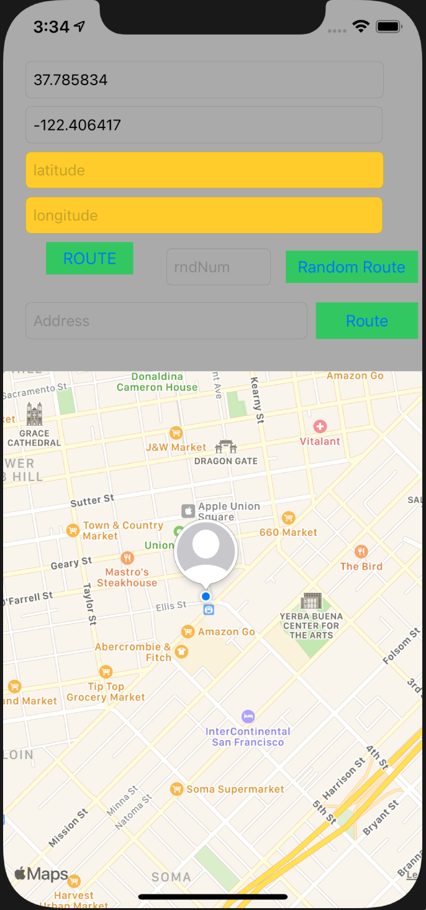
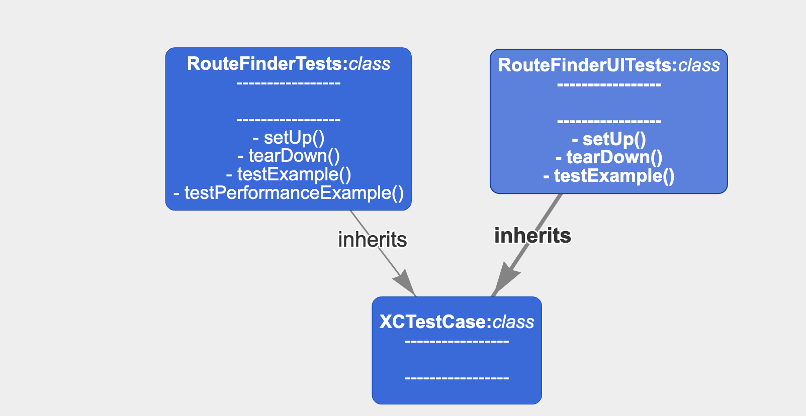
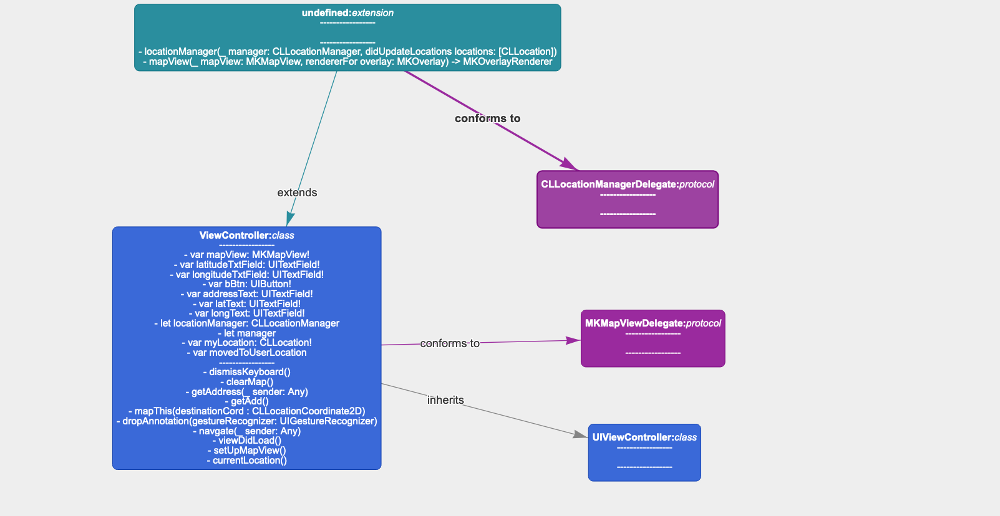
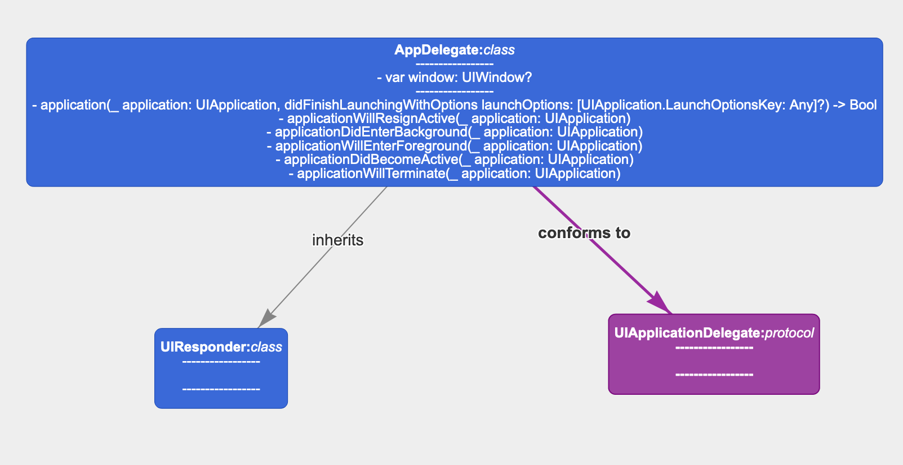

Purpose
This program is intended to fufill the needs of someone who needs to plot a route between two points, especially for the purpose of running, biking, jogging, or wandering around.
Document Conventions
This document will conform to github Markdown conventions for ease of rendering cross-platform. The following conventions are used:
Intended Audience and Reading Suggestions
This document is intended for development team members and should adhere to basic highschool and above reading/writing levels.
Product Scope
This project will be developed within multiple iterations inside of (1) semester at California State University, Fullerton. The bulk of the work is accessing the MapKit API from Apple’s IOS platform and any data will be stored locally. User location is accessed upon consent from the user.
References and Resources
Loading the Application
Upon opening the app, the splash screen will load. If you see this screen for over 30 seconds, please report this problem to the development team.

Allowing User Location
When opening the app for the first time, a prompt to allow user location access will appear. If you choose to allow, then the app will start with your current location as the starting point. Otherwise you will have to enter that information manually.

Afterwards, the home screen will show.

Setting a Specific Destination
You can enter a location to route to either by coordinates, or address.

Setting a Random Destination
You can enter a distance for a random location into the miles input box.

Plotting a Route
Once you have a destination, you can plot your route by tapping the Route button.

Product Perspective
The is a simple route-finding and route-generating tool that will be available for the IOS operating system. Using this program, users can find a location and generate a route to that location.
Product Functions
There will be 6 distinct functions.
User Classes and Characteristics
General user - anyone who wants to find a route between two points, for any purpose such as jogging, biking, hiking, or wandering out.
General users can perform the following functions:
Operating Environment
This app will be run on the IOS system.
Design and Implementation Constraints
Assumptions and Dependencies

Description and Priority
The route finder application can assist many kinds of users in finding new paths to travel, encourage exercise, and prevent boredom. Ergo, this project is of the highest priority.
Functional Requirements
Performance Requirements
Safety Requirements
Security Requirements
Software Quality Attributes
Business Rules
User Documentation
To compile and run:
Clone repository
git clone https://github.com/drotter120/route_finder.git
Open XCode project file in ‘RouteFinder’ folder
Click the run icon.
Simulator will open, have fun.
 ## Data Flow Diagrams (DFD)
## Data Flow Diagrams (DFD)
 ## Class Diagrams
## Class Diagrams
Test Units

View Controller

App Delegate

None - No database needed